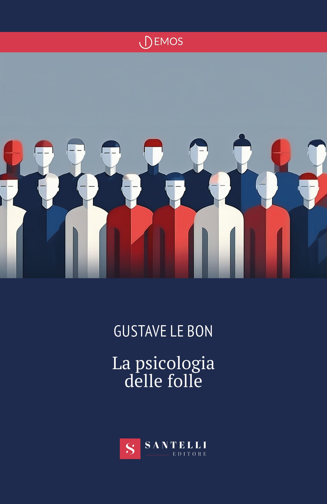
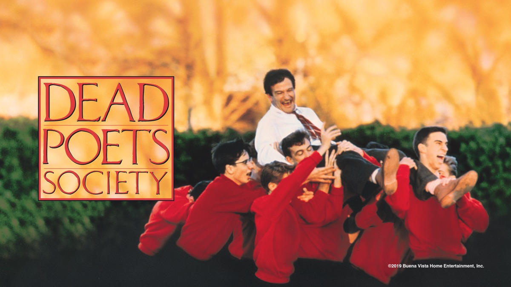
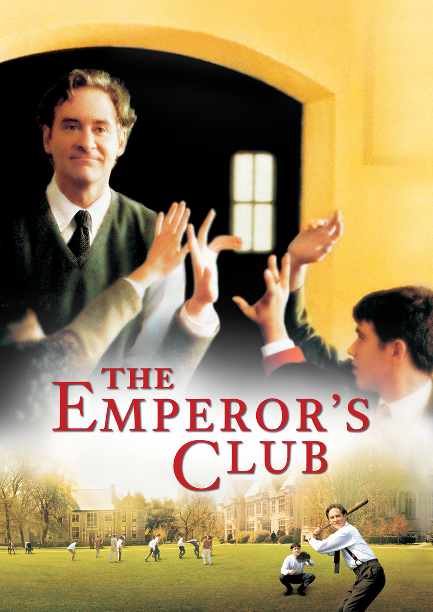
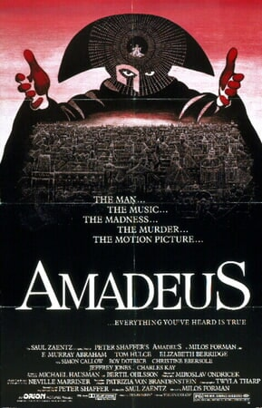
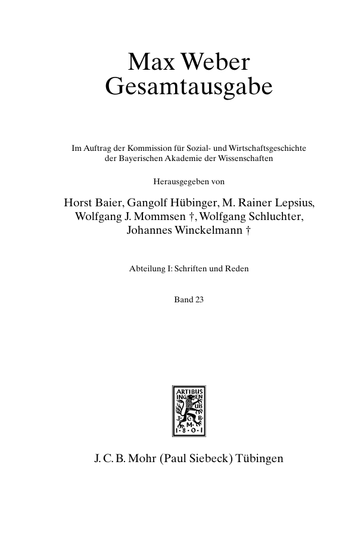
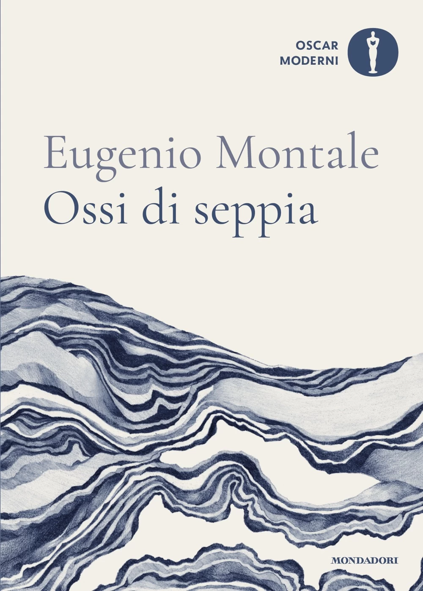
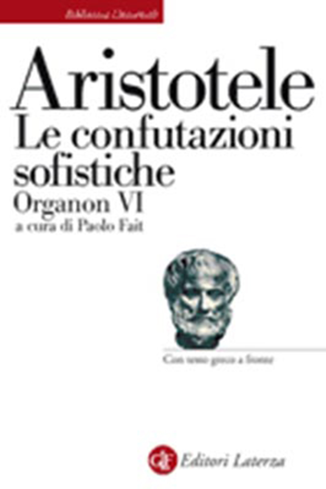

1:14:06 · 18 OPERE
Le società postcostituzionali.
Il filo del discorso
Dr Divago legge e commenta La psicologia delle folle di Gustave Le Bon per proporre una tesi sulle società che definisce postcostituzionali: le garanzie formali sopravvivrebbero mentre il consenso collettivo e la comunicazione ne indeboliscono, a suo giudizio, la sostanza. Il percorso attraversa rivoluzioni europee, guerre, costituzioni del dopoguerra e gestione della pandemia. Marx, Canetti e Carlo Levi accompagnano il confronto fra numero, idee e autonomia del giudizio; quattro film di formazione aprono una digressione sui modelli culturali. Nella seconda parte Rousseau, Weber e l’articolo 36 introducono sovranità e obbedienza, poi la discussione passa alle fallacie, al silenzio evocato da Montale e a una testimonianza riferita di Yeonmi Park. La conclusione affida al capitolo Zinco del Sistema periodico di Primo Levi l’elogio dell’impurezza e del dissenso. La scheda distingue le opinioni politiche del relatore da fatti verificati e diagnosi: corregge il valore costituzionale della Grundgesetz, la morte di Condorcet, l’ambito dell’articolo 36 e la riserva che Rousseau pone al consenso desunto dalla residenza. Le affermazioni sanitarie assolute e le equivalenze con il fascismo restano attribuite, senza trasformare la lettura contemporanea in parole degli autori citati.
I libri nel discorso

La psicologia delle folle (Psychologie des foules)
Copertina: Santelli, Demos, 2023, 164 pagine, ISBN 9788892929050. L’editore indica il 13 ottobre, mentre alcuni cataloghi librari indicano il 6 ottobre. Copertina ufficiale blu con figure stilizzate bianche e rosse, titolo e autore; immagine della nuova veste editoriale ospitata nel 2025. Opera originale francese del 1895. Questa copertina è successiva alla vicenda del 2020 e non è attribuita al video.
Copertina intera dell’edizione di riferimento, identificata sulla pagina dell’editore. La descrizione promozionale dell’editore sul rapporto fra Le Bon e i dittatori non viene assunta come dimostrazione di ogni influenza storica.
Titolo e autore pronunciati; lettura e commento di più passaggi del testo 1895 lungo il video.
Passaggio 1:03 ↗ · Fonti e libro ↗
La Scienza nuova / Principi di scienza nuova
Identificazione probabile
Copertina della raccolta delle tre edizioni · Bompiani, 2012: Prima redazione 1725, seconda 1730, ulteriore redazione 1744. Copertina della raccolta Bompiani, Il Pensiero Occidentale, ottobre 2012, a cura di Manuela Sanna e Vincenzo Vitiello, 1504 pagine, ISBN 9788845271557, che presenta le tre edizioni. Non la prima tiratura né il primo tomo del video.
Copertina ufficiale Bompiani con sottotitolo Le tre edizioni del 1725, 1730 e 1744. Un solo volume moderno di riferimento, distinto dalla edizione storica in più tomi evocata nel filmato; il testo e la Vita non sono assegnati indiscriminatamente a tutte le redazioni.
Vico e corsi/ricorsi riconoscibili, titolo non pronunciato: collegamento probabile alla Scienza nuova.
Passaggio 4:37 ↗ · Fonti e libro ↗
Grundgesetz für die Bundesrepublik Deutschland
Copertina dell’edizione Bundestag 2025: Grundgesetz: Deutscher Bundestag, Neuauflage 2025. Testo del 23 maggio 1949 aggiornato al 22 marzo 2025. Copertina integrale dell’opuscolo ufficiale, pagina 1 del PDF.
Copertina grigia con aquila, Deutscher Bundestag, titolo e bollino magenta Neuauflage 2025. Edizione istituzionale di riferimento successiva al video; non una presunta copertina originale 1949.
Grundgesetz evocata nel quadro delle costituzioni postbelliche; è la costituzione della Germania, non una legge ordinaria priva di valore costituzionale.
Passaggio 12:27 ↗ · Fonti e libro ↗
Tesi su Feuerbach
Copertina della raccolta che comprende le Tesi su Feuerbach: Newton Compton · Le opere che hanno cambiato il mondo · ebook · 2013
Copertina dell’ebook della raccolta Newton Compton, distinta dal volume cartaceo con altro ISBN. L’editore elenca esplicitamente le Tesi fra i contenuti. Non è l’edizione impiegata nel filmato.
Formula dell’undicesima tesi su Feuerbach riconoscibile nel contrasto interpretare/trasformare il mondo.
Passaggio 17:10 ↗ · Fonti e libro ↗
Massa e potere
Copertina: Adelphi · gli Adelphi · 2015
Copertina autentica controllata visivamente. Edizione di riferimento, non identificata come quella usata nel video.
Canetti e Massa e potere nominati esplicitamente.
Passaggio 19:20 ↗ · Fonti e libro ↗
Manifesto del Partito comunista
Copertina: Einaudi · ET Saggi · 2014
Copertina dell’edizione Einaudi del Manifesto, che comprende anche altri scritti e materiali. Nel video il rinvio al testo resta un’allusione probabile, senza identificazione dell’edizione.
Manifesto del Partito comunista nominato nel confronto con le rivoluzioni e le masse.
Passaggio 21:47 ↗ · Fonti e libro ↗
Cristo si è fermato a Eboli
Copertina: Einaudi, Super ET, 2025, introduzione di Nicola Lagioia, 288 pagine; edizione di riferimento successiva al video.
Copertina autentica dell’edizione Einaudi 2025, con introduzione di Nicola Lagioia. È successiva alla discussione del 2021 e non viene attribuita alla copia eventualmente letta dal relatore.
Carlo Levi e Cristo si è fermato a Eboli esplicitamente riconoscibili; distinto da Primo Levi.
Passaggio 34:01 ↗ · Fonti e libro ↗
L’attimo fuggente (Dead Poets Society)
Copertina: Buena Vista/Disney · artwork di distribuzione digitale del film 1989
Artwork orizzontale autentico Disney/Buena Vista pubblicato da Apple TV, con titolo e protagonisti; copyright 2019 dell’immagine digitale. Non copertina del romanzo, non locandina della prima uscita, non edizione identificata nel video.
L’attimo fuggente/Dead Poets Society pronunciati fra i film sugli insegnanti; Peter Weir 1989.
Passaggio 50:50 ↗ · Fonti e libro ↗Scoprendo Forrester (Finding Forrester)
Copertina: Columbia/Sony Pictures · poster del film 2000
Poster autentico Sony: titolo inglese, Sean Connery e Rob Brown visibili. Edizione commerciale non identificata nel parlato.
Finding Forrester pronunciato, trascrizione automatica Forester normalizzato; titolo e film verificati presso Sony.
Passaggio 50:58 ↗ · Fonti e libro ↗
Il club degli imperatori (The Emperor’s Club)
Identificazione probabile
Copertina: Universal · poster del film 2002
Poster ufficiale intero Universal con Kevin Kline e titolo inglese. L’autenticità dell’immagine è verificata; il riconoscimento del riferimento nel video resta probabile.
Il contesto dei film di formazione suggerisce The Emperor’s Club (2002), ma il titolo nella trascrizione è incerto.
Passaggio 51:05 ↗ · Fonti e libro ↗
Amadeus
Identificazione probabile
Copertina: Warner Bros · locandina originale del film 1984, riprodotta nella galleria ufficiale
Locandina intera con titolo, Saul Zaentz, Peter Shaffer, Miloš Forman e marchio Orion. Immagine dalla galleria ufficiale.
Film di Miloš Forman su Mozart, titolo non pronunciato: probabilmente Amadeus 1984.
Passaggio 51:26 ↗ · Fonti e libro ↗
Die Typen der Herrschaft
Identificazione probabile
Frontespizio di serie del volume contenitore Max Weber-Gesamtausgabe I/23, che include il capitolo III; non copertina autonoma del capitolo.: Frontespizio autentico di serie del volume contenitore MWG I/23: Max Weber-Gesamtausgabe, Abteilung I: Schriften und Reden, Band 23 (pagina PDF 3 del preview pubblico). Il frontespizio successivo identifica Wirtschaft und Gesellschaft. Soziologie. Unvollendet 1919–1920; copyright 2013, ISBN 9783161502927, edizione elettronica invariata 2019 e ISBN 9783161577499. Il capitolo III Die Typen der Herrschaft è elencato nell’indice a p 449. Non copertina di un libro autonomo o del distinto frammento dei tre tipi puri.
Frontespizio di serie del preciso contenitore I/23, non la coperta blu generica con sola firma. Le pagine adiacenti 3–6 documentano numero, titolo, curatori, ISBN e presenza del capitolo. Nessuna edizione è precisata nel video; l’identificazione del capitolo resta probabile.
Nel passaggio: 42 s: legittimità politica, Weber nominato a 3497,92 s, titolo Tipi di dominio / Typen der Herrschaft a 3510,02 s e richiamo ad Arendt. La trascrizione automatica deforma il titolo tedesco; riscontro bibliografico probabile al capitolo III, senza identificare l’edizione letta o trasformare il nome breve in titolo autonomo.
Passaggio 58:30 ↗ · Fonti e libro ↗
Il contratto sociale
Copertina: Laterza · Economica · ristampa 2023 · edizione di riferimento
Il contratto sociale nominato e discusso il passo sulla residenza; nota dello stesso Rousseau in IV.2 limita la formula agli Stati liberi.
Passaggio 59:04 ↗ · Fonti e libro ↗
Costituzione della Repubblica Italiana
Copertina dell’edizione Intra aggiornata al 2023: Intra · 2023 · introduzione di Umberto Vincenti
Copertina autentica del testo integrale, aggiornata alla legge costituzionale 26 settembre 2023 n.1. È successiva al filmato del 2019 e non rappresenta la versione storica letta dal relatore. Umberto Vincenti firma l’introduzione.
Articolo 36 ed esistenza libera/dignitosa richiamati; il primo comma verte sulla retribuzione del lavoratore e della sua famiglia.
Passaggio 59:45 ↗ · Fonti e libro ↗
So l’ora in cui la faccia più impassibile
Identificazione probabile
Copertina: Ossi di seppia · Mondadori/Oscar ·19 marzo 2024 · ISBN 9788804779254 · copertina della raccolta contenente la poesia
Copertina autentica di Ossi di seppia, raccolta che contiene la poesia; non esiste qui una copertina autonoma della lirica. Edizione 2024 illustrativa successiva al video, non copia citata. Nessuna seconda voce aggiunta per la raccolta.
Montale nominato e due versi finali ricordati con variazioni; titolo/incipit identificato dal confronto testuale, non pronunciato.
Passaggio 1:03:03 ↗ · Fonti e libro ↗
Le confutazioni sofistiche (Organon VI)
Copertina: Laterza · Biblioteca Universale Laterza 599 ·2007 · Paolo Fait · ISBN 9788842083160
Copertina autentica del trattato, titolo Organon VI e curatore leggibili. Edizione illustrativa riscontrata, non affermata come la copia del relatore.
Aristotele e Confutazioni sofistiche nominati esplicitamente nella discussione delle fallacie.
Passaggio 1:05:15 ↗ · Fonti e libro ↗
Bibbia
Copertina: San Paolo, 2014 · Nuova Versione dai Testi Antichi · edizione di riferimento
Seconda lettera ai Tessalonicesi, mysterium iniquitatis: richiamo al 2:7.
Passaggio 1:07:10 ↗ · Fonti e libro ↗
Il sistema periodico
Copertina: Einaudi · Einaudi tascabili, Scrittori · 2026
Copertina autentica dell’edizione di riferimento, non attribuita all’esemplare del video.
Primo Levi e Il sistema periodico nominati; lettura conclusiva dal capitolo Zinco (non Zolfo). Attualizzazione sulla vaccinazione formulata dal relatore.
Passaggio 1:13:11 ↗ · Fonti e libro ↗Fonti e approfondimenti (11)
- Bundesverfassungsgericht · natura costituzionale e entrata in vigore della Grundgesetz ↗
- Federal Reserve · legge istitutiva23 dicembre 1913 ↗
- IRS · cronologia 1861–1913 dell’imposta sul reddito ↗
- Archives départementales des Hauts-de-Seine · Condorcet, arresto e atto di morte ↗
- EMA · comunicato 25 novembre 2021 su Comirnaty 5–11 anni, letto dalla pagina originale ↗
- Rousseau · Contrat social IV, 2, testo 1762 e nota sullo Stato libero ↗
- Senato · Costituzione, articolo 36 ↗
- Max Weber Gesamtausgabe/BAdW · indice del volume I/23 e capitolo III ↗
- KINU · ricerca originale sui diritti delle donne nordcoreane, ricorrenza 2012, p 14 ↗
- ONU · rapporto e attività della commissione 2014 ↗
- Università di Pisa/Scuola Primo Levi · contributo di Valentina Domenici, testo citato da Zinco ↗